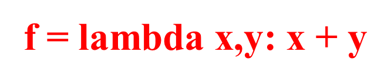

作答记录
选择下面程序的输出结果：
a=(1,2,3)
def func(*a):
for i in a:
print(i)
func(a)
1
2
3
选择下面程序的输出结果：
a=[(1,2,3),4]
def func(*a):
for i in a:
print (i)
func(*a)
(1，2，3)
4
1
2
3
4
预使输出结果为：{'1', '2', '3', '4', '5'}
可以使用的输出语句为：
def func(a,b):
print(a,b)
def func(a,b,c):
print(a,b,c)
func(1,2,3)
1,2
1,2,3
选择下面程序的输出结果：
a=[(1,2,3),4]
def func(*a):
for i in a:
print (i)
func(a)
(1，2，3)
4
1
2
3
4
选择下面程序的输出结果：
a=(1,2,3)
def func(*a):
for i in a:
print(i)
func(*a)
1
2
3
def f1():
"Simple function"
"Simple function"
pass
print(f1.__doc__)
"Simple function"
"Simple function"
在上面的Lambda函数定义中，函数的形式参数是：
print(a)
的输出结果是：
(*表示某数字)
预使输出结果为：('1', '2', '3', '4', '5')
可以使用的输出语句为：
['abcba']
f1 = lambda x:x*2
f2 = lambda x,y:x*y
f1(f2(2,3))
def func(**a,b=2,c):
pass
def func(**,a,b=2,c):
pass
def func(a=2,*b):
pass
def func(a,*b):
pass
def func(a,b=2,c):
pass
def func(*,a,b=2,c):
pass
def func(*a,b=2,c):
pass
def func(a=2,b):
pass
def func(a,b):
pass
def func(a,b=2,c):
pass
def func(param1,*param2):
print(param2,sep=';')
func(1,2,3,4)
——————
#将n个从小到大依次排列的圆盘从柱子a移动到柱子c上，柱子b作为中间缓冲
def hanoi(n,a,b,c):
if n==1: print(a,'->',c) #只有一个圆盘，直接将圆盘从柱子a移动到柱子c上
else:
#先将n-1个圆盘从柱子a移动到柱子b上（采用递归方式）
#然后将最大的圆盘从柱子a移动到柱子c上
#再将n-1个圆盘从柱子b移动到柱子c上（采用递归方式）
def timeit(func):
def wrapper(*s):
start = time.perf_counter()
（被包装函数调用）
end = time.perf_counter()
print('运行时间:', end - start)
return （返回对象）
@timeit
def my_sum(n):
sum = 0
for i in range(n): sum += i
print(sum)
def func(param1,*param2):
print(*param2,sep='*')
func(1,2,3,4)
——————
def func(a,b):
return 2*a,2*b
type（func(2,3)）
输出结果是：
def aFunction():
"This is the __doc__"
return 1
print(aFunction.__doc__[-7:])
a=1
b=2
def f(a, b):
x = 'abc'
y = 'xyz'
for i in range(1): #i=0~1
j = i
k = i**2
print(type(locals())) #
print(locals().get('a')) #
print(locals().get('x')) #
print(locals().get('y')) #
print(locals().get('b')) #
f(5,8)
a=1
b=2
def f(a, b):
a=a+1
b=b+1
f(3,5)
print(globals().get('__name__')) #
print(globals().get('a')) #
print(globals().get('b')) #
a=1
b=2
def f(a, b):
x = 'abc'
y = 'xyz'
for i in range(1): #i=0~1
j = i
k = i**2
print(type(locals())) #
print(locals().get('a')) #
print(locals().get('x')) #
print(locals().get('y')) #
print(locals().get('b')) #
f(3,5)
a=5
b=8
def f(a, b):
a=a+1
b=b+1
f(3,5)
print(globals().get('__name__')) #
print(globals().get('a')) #
print(globals().get('b')) #
def func(a,b):
return 2*a,2*b